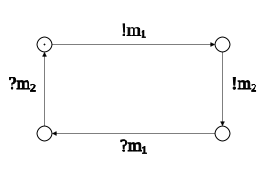

Algorithmic Structure in Weak Memory
and RDMA Verification
Stephan Spengler
Uppsala University, Sweden
06.03.2024
x = 0
y = 0
x = 0
y = 0
P ::= skip
| P1 ; P2
| P1 + P2
| P*
| x := v
| assume(x == v)
| mfence
x = 0
y = 0
z = 0
x = 0
x = 0
x = 0
x = 0

x = 0
y = 0